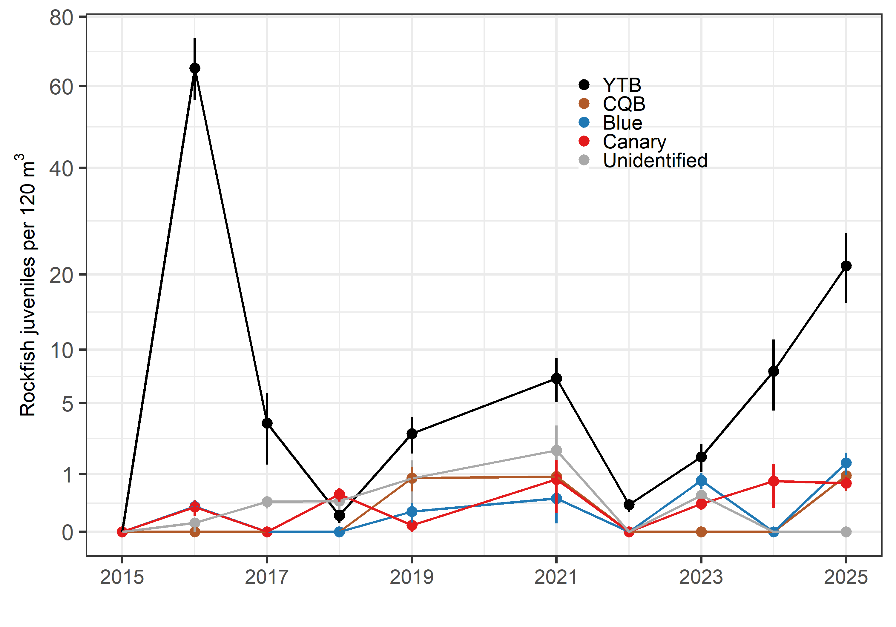
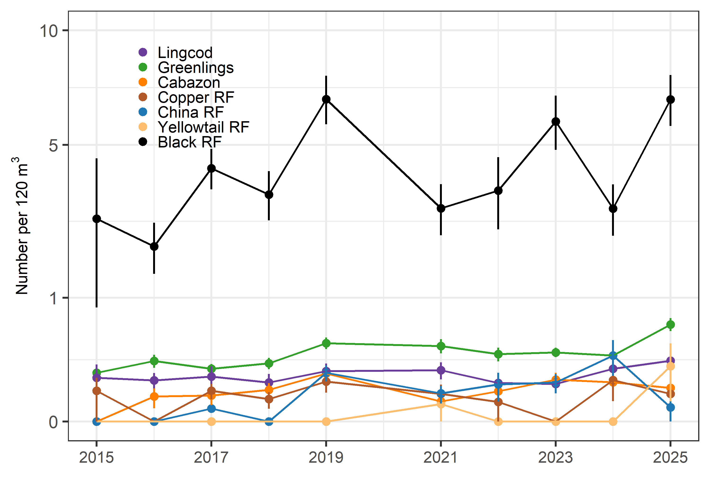
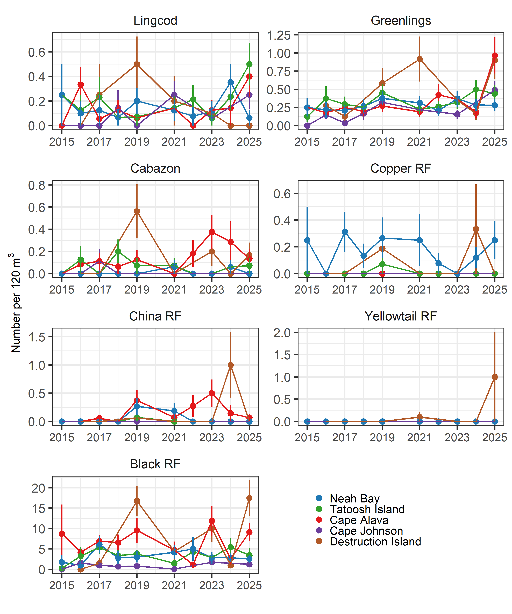
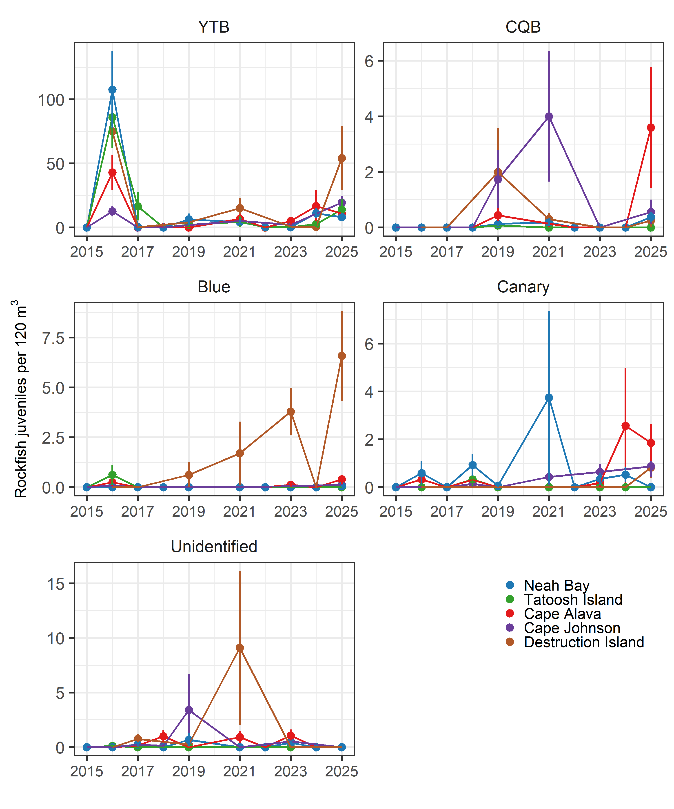

[1] "Loading fish"
[1] "Running fish"[1] "Finished fish"To update fish data to the most recent year, run:
in the ‘update-data’ chunk. The update is done automatically within this RMD, but you will need to check that the trigger is turned on in the if statement in the in the ‘update-data’ is “if(1==1)”.
You will also need to have:
as helper files. These are in the repo.
Set the data_ _year year
To process the raw data:
The xlsx version of the file is used to pull the species codes: fish_codes, swath_codes, kelp_codes.
HOWEVER, at present read_xlsx incorrectly loads the data files because the SIDE/AREA column has both numbers and letters. read_xlsx turns these into NAs. This change messes up the transect area calculations and doubles the estimated densities…incorrectly of course. I haven’t figured out how to fix that yet.
Processed data are saved to: “~/GitHub/OCNMS/Data/2024/” or whatever the current data_year is.
Needs to be updated
This chunk will load the species codes and run the update files to turn the raw data files into counts by size and transect. Once you’ve run it, you can turn of the data processing part and just load the species codes. The chunk runs:
[1] "Loading fish"
[1] "Running fish"[1] "Finished fish"Bring in the initially processed data
I set some common settings here. The settings.rds file ports the same info over to the multivariate rmd. It is brought in and updated here.
Raw data are fish counts by size, so there are multiple observations per species per transect. Sum up counts by transect.
Minimum vis for fish analysis = 2-m
Kelp depths = 5 -m Fish depths = 5, 10 -m Inv depths = 5 -m
Visibility data for 2015 are fake. DI was bad and set at 1.0 m; other sites set at 3.0 m
Mean abundance of YOY rockfish, averaged across all sites.
`summarise()` has grouped output by 'site', 'year'. You can override using the
`.groups` argument.
`summarise()` has grouped output by 'year'. You can override using the
`.groups` argument.
Joining with `by = join_by(taxa)`
Species mean abundance across sites for depths listed below.
Fish depth = 5, 10
Joining with `by = join_by(taxa)`
Species mean abundance by site x year x depth
Joining with `by = join_by(taxa)`
Species mean abundance by site x year x depth
Joining with `by = join_by(taxa)`